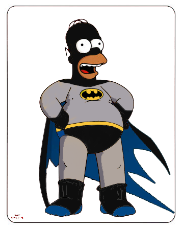
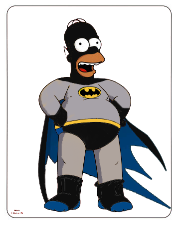

In de schaduwen van een stil, slapend Springfield doemt een figuur op. Niemand weet waar hij vandaan komt, maar geruchten verspreiden zich snel door de stad. Sommigen zeggen dat hij enkel verschijnt wanneer de nacht het donkerst is; anderen fluisteren dat hij overal tegelijk kan zijn. Zijn naam? Niemand durft het hardop te zeggen, maar iedereen kent hem als... de "Gele Ridder."